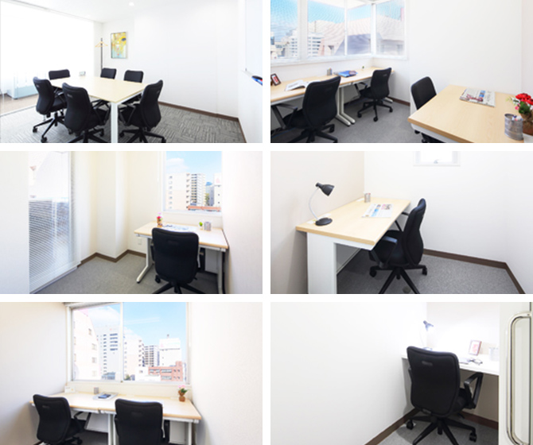

【個室レンタルオフィス】
オープンオフィス熊本銀座通り
オープンオフィス熊本銀座通りがNEW OPEN
九州第3の都市、熊本市。
九州全域にアクセス便利なロケーション、恵まれたビジネス環境を求めて、今、多くの企業が注目をする熊本のビジネスセンター。
オープンオフィス熊本銀座通りが提供するオフィスサービス
-
 高速インターネット＜光ファイバー＞
高速インターネット＜光ファイバー＞
- 100Mbpsの光ファイバーによるブロードバンド環境をご用意しました。各部屋に配線済みですので、パソコンに繋げばすぐLAN経由で高速インターネットを利用出来ます。
-
 ネットワーク・カラーレーザープリンタ+スキャナー
ネットワーク・カラーレーザープリンタ+スキャナー
- ネットワークを利用して、各お部屋のパソコンから印刷できます。プリンタをご用意いただく必要もございません。
スキャナー機能も搭載しております。
-
 カラーレーザーコピー
カラーレーザーコピー
- フロア内にご用意してあります。カード方式でコピーが出来ますので、小銭の準備が不要です。
-
 ICカードキーによる入室管理
ICカードキーによる入室管理
- 専用ICカードを使ったホテル式のスマートシステムを用いて、セキュリティーを向上させています。
-
 ミーティングルーム（会議室）
ミーティングルーム（会議室）
- 商談・会議にご利用いただける共有スペースをご用意しています。インターネットで簡単に予約をしていただけます。
-
 無線LAN（WiFi）
無線LAN（WiFi）
- 共有スペースとミーティングスペースにて、無線LAN(WiFi)サービスをご利用いただけます。

オープンオフィス熊本銀座通りの特徴

九州第3の政令指定都市
九州全域にアクセス便利なロケーション
周辺に駐車場多い
主要道路へ隣接 通勤・営業活動をサポート
24時間利用可能。貴社の働き方にも柔軟に対応
オフィス周辺のMap
オープンオフィス熊本銀座通り近隣のスポット
- ■銀行
- 福岡銀行 熊本営業所
長崎銀行 熊本支店
宮崎銀行 熊本支店
鹿児島銀行 熊本支店
三菱東京UFJ銀行 熊本支店
りそな銀行 熊本支店
みずほ銀行 熊本支店 - ■レストラン
- 薔薇亭 ステーキ
七笑 和食懐石 馬刺し
楽楽 焼肉 馬刺し
五郎八 和食
峰寿司
赤煉瓦 フレンチ - ■ホテル
- ホテル日航 熊本
三井ガーデンホテル 熊本
ホテルニューオータニ 熊本
熊本ホテルキャッスル
ANAクラウンプラザホテル 熊本
ニュースカイ - ■レジャー
- コナミスポーツクラブ熊本
- ■映画館
- シネプレックス熊本
オープンオフィス熊本銀座通りの住所・アクセス
- 住所:
- 熊本県熊本市中央区中央街4-22 アルバ銀座通りビル 2階－8階
- 空港からのアクセス:
- 熊本空港からリムジンバスで「通町筋」まで約30分
- 電車からのアクセス:
- 熊本市電「花畑町」電停から徒歩5分
JR熊本駅からタクシーで8分 - 電車からのアクセス:
- 銀座通り面す。「下通1丁目」交差点と「中央街」交差点の中間
オープンオフィス熊本銀座通りのフロアマップ
2F

3F

4F

5F

6F

7F

8F

※フロア内は禁煙です。
※こちらはイメージ図となりますので、状況が異なる場合は現況を優先させていただきます。
- ◆初回納入金
- 利用料1ヶ月分の保証金
- ◆共益費
- 水道光熱費、ビル共益費、ゴミ出し、フロア・トイレの清掃、共有部分の消耗品代を含みます。
リージャスグループの説明
リージャス・グループは、柔軟なワークスペースを提供する世界最大の企業です。そのネットワークは世界120カ国1,100都市、3300拠点に及びます。会員数は250万人で、業界で成功を収める大小様々な企業や起業家の方々にご利用いただいています。
リージャスは、個室タイプのレンタルオフィス、コワーキングスペースなど多彩なオフィスプラン、近年需要が高まるモバイルワークやバーチャルオフィス、障害復旧サービスの提供を通じ、お客様が予算やワークスタイルに合わせて仕事を行うことができる環境を提供いたします。